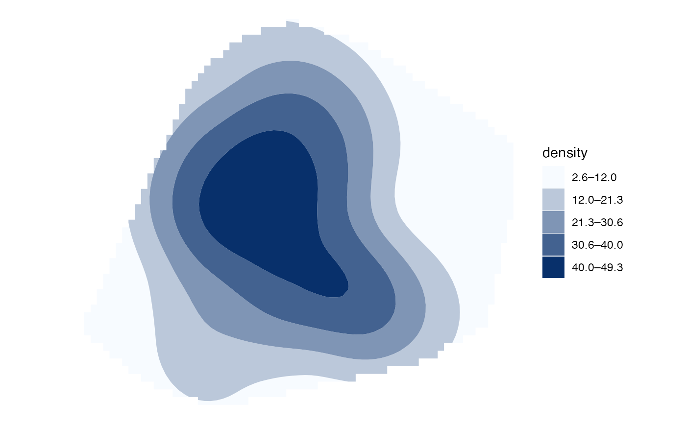

Generalise values in a regular square grid into polygon bands. The result is
an sf::sf object with one row for each non-empty band and can be plotted
with autoplot() or autolayer().
Usage
hotspot_isoband(
data,
value = NULL,
breaks = 5,
style = "equal",
critical_p = 0.05,
quiet = FALSE
)Arguments
- data
An sf::sf object containing a regular square grid and at least one numeric column, typically produced by a
hotspot_*()function.- value
The unquoted name of the numeric column to convert. If
NULL, a suitable column is inferred from the sfhotspot class ofdata, or from the sole numeric column in an otherwise unrecognised SF object.- breaks
Either a single positive integer giving the requested number of bands (five by default), or a strictly increasing numeric vector giving the band boundaries. If multiple boundaries are supplied,
styleis silently ignored.- style
Method used to calculate breaks when
breakshas length one. Values other than"pconventions"are passed to thestyleargument ofclassInt::classIntervals()."pconventions"uses two-sided normal-theory thresholds corresponding to p-values of 0.1, 0.05, 0.01 and 0.001 and ignoresbreaks.- critical_p
For output from
hotspot_gistar()containing akdecolumn, the largest p-value for a cell to be included. The default is0.05. This argument is ignored for other inputs.- quiet
If
TRUE, suppress informative messages about automatically selected values and potentially unhelpful intervals.
Value
An sf tibble with class hspt_ib. It has one row per non-empty
band and columns lower, upper, band, label, and geometry. The
band and label columns are ordered factors; band contains technical
interval notation and label contains ranges formatted for display.
Details
The default style = "equal" divides the observed range into equal-width
intervals, providing a discrete analogue of a linear continuous colour
scale. Extreme values can make equal-width bands uninformative; a message is
produced when at least 90% of finite values fall in one calculated band.
For change values, Gi*/Gi statistics, and dual-KDE differences or logged ratios, automatically calculated breaks place zero at a boundary or at the centre of a band. Explicit break vectors are never altered.
When data is output from hotspot_gistar() and contains KDE values, KDE
is converted and cells with pvalue >= critical_p are excluded before the
bands are calculated. Without KDE values, the Gi*/Gi statistic is converted.
Values are interpolated between grid-cell centres. Lattice positions absent from a grid clipped to its original analysis area are treated as missing. Consequently, the isobands need not cover the complete area of every outer grid cell.
Examples
# \donttest{
memphis_robberies_jan |>
hotspot_kde() |>
hotspot_isoband() |>
autoplot()
#> Cell size set to 0.00512 degrees automatically
#> Data transformed to "WGS 84 / UTM zone 16N" co-ordinate system.
#> ℹ CRS code: "EPSG:32616".
#> ℹ Unit of measurement: metre.
#> Bandwidth set automatically based on rule of thumb.
#> ℹ Bandwidth = 8,867 metres.

# }